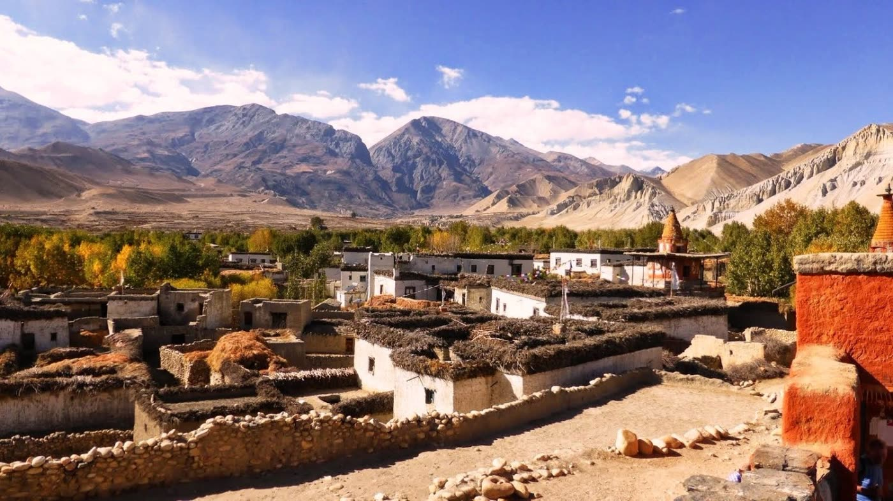
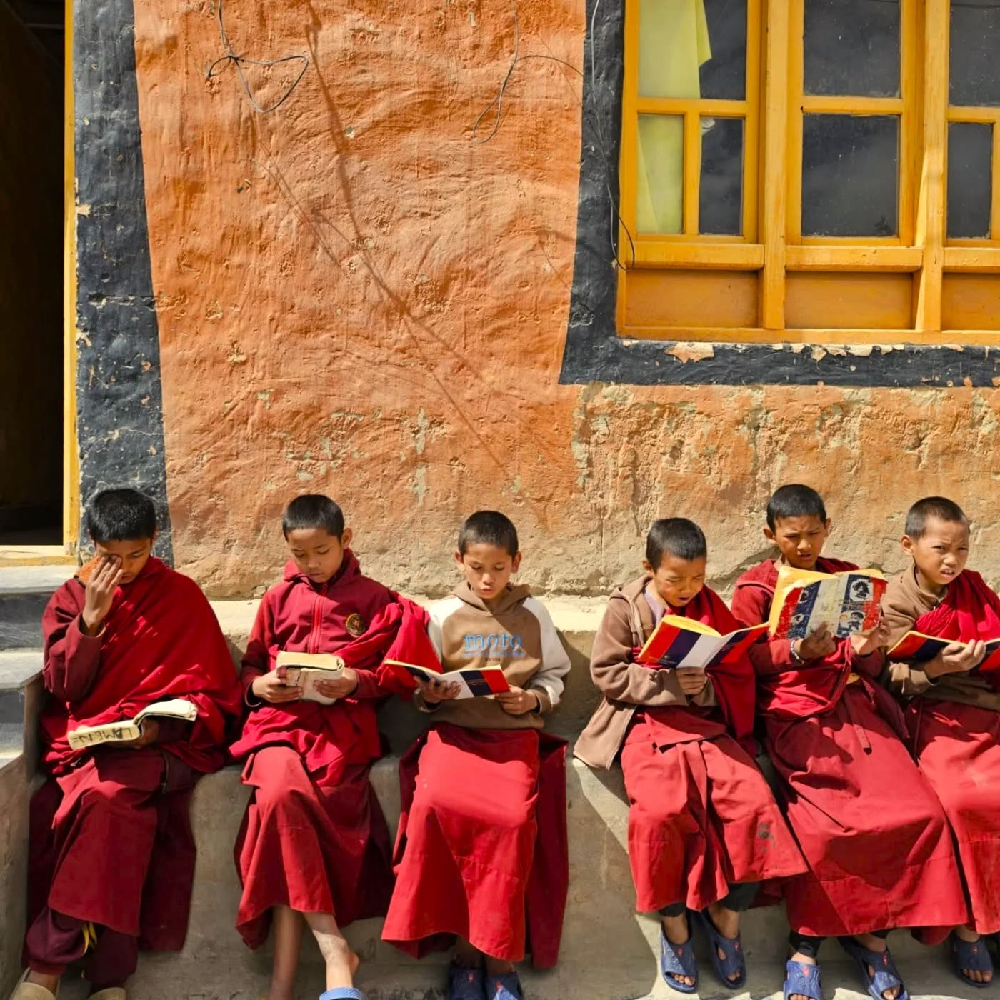
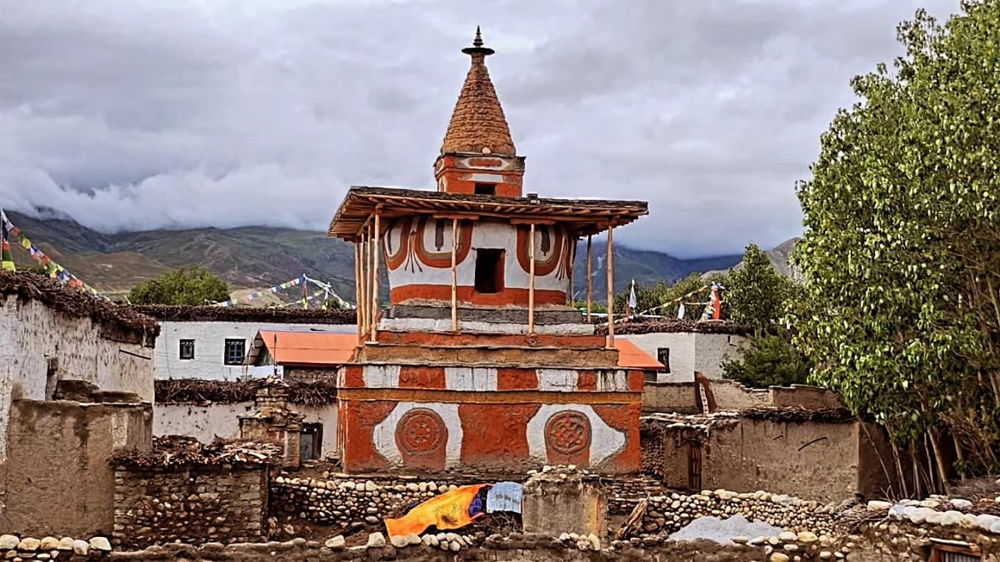
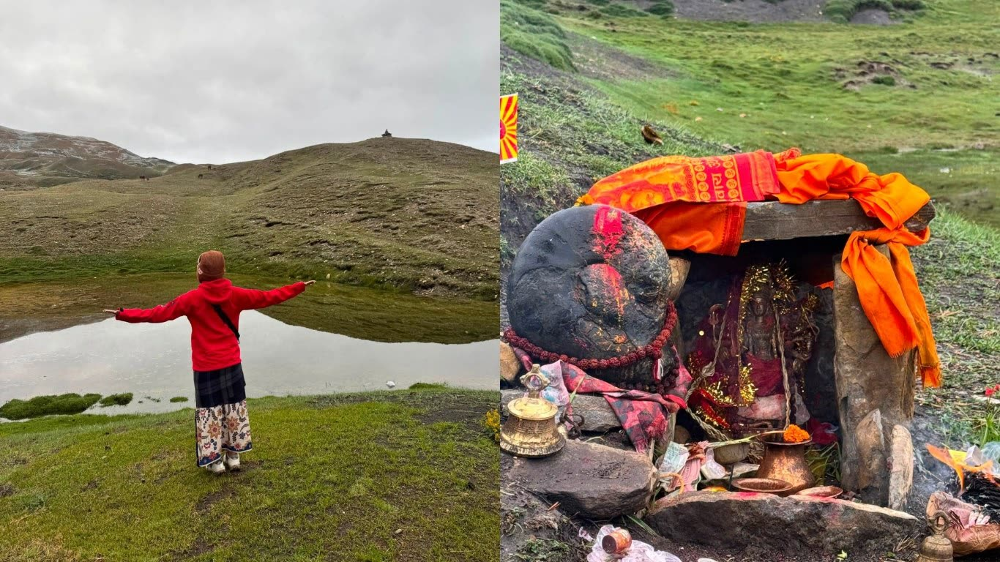
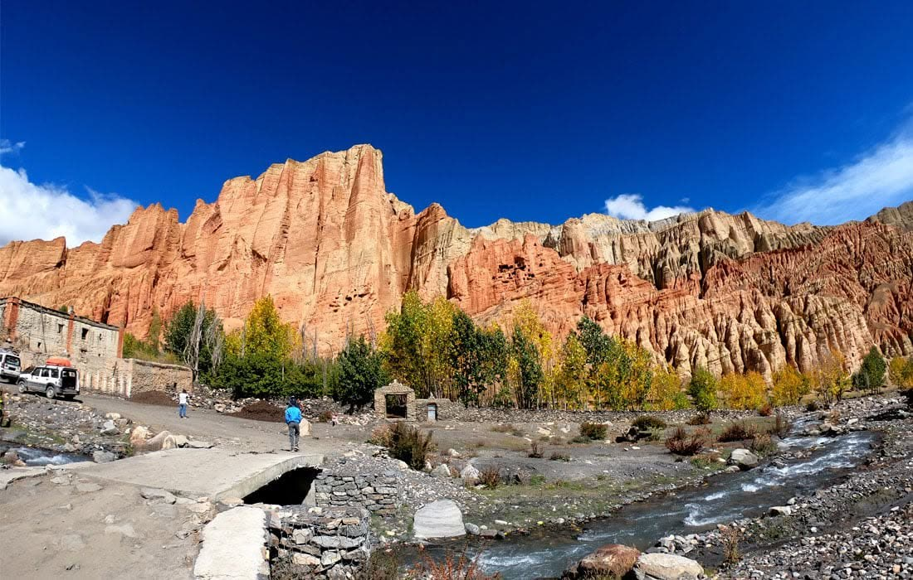
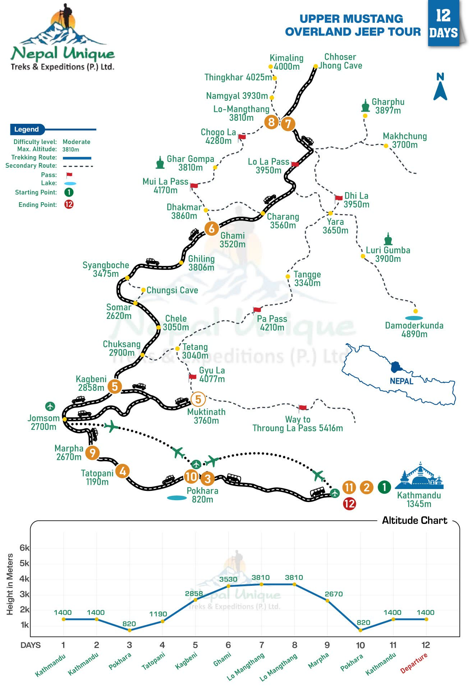

Upper Mustang Tea House Trek
The Upper Mustang Tea House Trek is an incredible journey into the remote and culturally rich landscapes of Nepal’s Mustang Region Trek. Also known as the Upper Mustang Trek or Lo Manthang Trek, this adventure takes you through ancient Tibetan-style villages, historic monasteries, dramatic cliffs, rocky canyons, and the spectacular high-altitude Himalayan dessert.





Key Trip Facts
Trek Overview
Trip Highlights
Upper Mustang Tea House Trek Overview
The Upper Mustang Tea House Trek is an incredible journey into the remote and culturally rich landscapes of Nepal’s Mustang Region Trek. Also known as the Upper Mustang Trek or Lo Manthang Trek, this adventure takes you through ancient Tibetan-style villages, historic monasteries, dramatic cliffs, rocky canyons, and the spectacular high-altitude Himalayan dessert. The trek offers a unique opportunity to experience the traditional lifestyle, Buddhist culture, and centuries-old heritage of the people living in this isolated region.
Located north of the Annapurna and Dhaulagiri ranges and close to the Tibetan border, Upper Mustang is often described as the “Last Forbidden Kingdom.” The region was opened to international trekkers only in 1992, helping preserve its distinctive Tibetan culture and traditions. The walled city of Lo Manthang, the cultural heart of Upper Mustang, is one of the major highlights of the trek, with ancient palaces, monasteries, whitewashed houses, and narrow alleyways reflecting the region’s fascinating history.
The Upper Mustang Tea House Trek follows trails along the Kali Gandaki Valley and through some of the most unusual landscapes in the Himalayas. From Kagbeni, an important traditional settlement, the trail gradually leads north toward Lo Manthang, passing through picturesque villages and spectacular geological formations. The route also offers views of the dramatic Kali Gandaki River gorge, colorful cliffs, caves, and barren landscapes shaped by centuries of wind and erosion.
One of the most fascinating aspects of the Mustang Trek is its preserved Tibetan Buddhist culture. The local communities, including the Loba people, have maintained their traditional customs, architecture, language, and religious practices for generations. Ancient Buddhist monasteries, prayer flags, chortens, mani walls, and centuries-old paintings can be found throughout the region. Visitors can also learn about the traditional lifestyle of the people and experience the spiritual atmosphere of remote Himalayan villages.
The Lo Manthang Trek is particularly rewarding for travelers interested in history and culture. The region is home to remarkable monasteries and religious sites containing ancient Buddhist art and murals. Traditional houses constructed from stone and sun-dried mud bricks add to the distinctive character of the settlements. If you travel during the appropriate season, you may also have the opportunity to witness the Mustang Tiji Festival Trek, one of the most important traditional Buddhist festivals celebrated in Lo Manthang.
Unlike many popular trekking routes in Nepal, the Upper Mustang Tea House Trek combines wilderness, culture, history, and adventure in a remarkably remote setting. Although the landscape appears dry and barren, its colorful cliffs, deep valleys, caves, and snow-capped Himalayan surroundings create a fascinating contrast. The tea house accommodation along the route allows trekkers to stay in local lodges and experience the hospitality and everyday life of communities in the Mustang region.
Overall, the Upper Mustang Trek is an ideal adventure for travelers seeking an authentic Himalayan experience away from Nepal’s more crowded trekking routes. With its ancient Tibetan villages, Buddhist monasteries, dramatic Himalayan dessert landscapes, historic Lo Manthang, and unique cultural heritage, the Upper Mustang Tea House Trek offers an unforgettable combination of exploration, cultural discovery, and high-altitude adventure.
Best Time for Upper Mustang Tea House Trek
The best time for the Upper Mustang Tea House Trek is from March to May (spring) and September to November (autumn). These seasons offer favorable weather, clear mountain views, comfortable trekking conditions, and relatively dry trails.
Spring (March–May)
Mild temperatures, clear skies, and excellent visibility make spring a great time for trekking in Upper Mustang. The landscape begins to show more color, and the weather is generally stable.
Autumn (September–November)
This is considered the best overall season for the Upper Mustang Trek. The monsoon has cleared the atmosphere, providing excellent views of the Himalayas, while dry trails make walking more comfortable.
Winter (December–February)
Trekking is possible, but very cold temperatures, snow, and the closure of some tea houses and lodges can make the journey more challenging.
Monsoon (June–August)
Upper Mustang lies in the rain-shadow of the Annapurna and Dhaulagiri ranges, so it receives considerably less rainfall than much of Nepal. Therefore, Upper Mustang is one of the few Himalayan regions suitable for trekking during the monsoon season. However, strong winds and occasional rain can still affect the trail.
For the best combination of weather, mountain views, and tea-house availability, September and November is the recommended period for the Upper Mustang Tea House Trek.
Upper Mustang Tea House Trek Itinerary: Day by Day
16 Days program for Upper Mustang Tea House Trek. Daily timings and sequences remain flexible according to weather, flight operations, and group pace.
Day 1: Arrival in Kathmandu Altitude, 1,400 m / 4,593 ft
Approx. 1,400 m / 4,593 ft
Welcome to Kathmandu, the capital city of Nepal. Upon arrival at Tribhuvan International Airport, you will be welcomed by our representative and transferred to your hotel. You can spend the rest of the day relaxing or exploring the vibrant streets of Kathmandu. Overnight at a hotel in Kathmandu.
Day 2: Kathmandu to Pokhara Altitude, 822 m / 2,697 ft Distance, Approximately 200 km Travel time, 6–8 hours by road
Approx. 820 m / 2,690 ft
After breakfast, drive from Kathmandu to Pokhara, a beautiful lakeside city and the gateway to the Annapurna and Mustang regions. The scenic journey follows winding mountain roads alongside rivers, hills, and traditional villages. Upon arrival in Pokhara, enjoy the evening exploring the lakeside area. Overnight at a hotel in Pokhara.
Day 3: Pokhara to Jomsom and Trek to Kagbeni Altitude, Kagbeni – 2,810 m / 9,219 ft Distance, Approximately 11 km Travel time, About 20 minutes by flight + 3 hours trekking
Approx. 2,810 m / 9,219 ft
Take an early morning flight from Pokhara to Jomsom, enjoying spectacular views of the Annapurna and Dhaulagiri mountain ranges. From Jomsom, begin your trek toward Kagbeni along the Kali Gandaki Valley. Kagbeni is an ancient settlement and the traditional gateway to Upper Mustang, featuring narrow alleys, traditional houses, Buddhist monuments, and fascinating Himalayan landscapes. Overnight at a tea house.
Day 4: Kagbeni to Chele Altitude, 3,050 m / 10,006 ft Distance, Approximately 11–14 km Trekking time, 5–6 hours
Approx. 3,050 m / 10,007 ft
Your journey into Upper Mustang officially begins today. The trail follows the Kali Gandaki River through dramatic landscapes and traditional villages. Pass through Tangbe and Chhusang before gradually ascending toward Chele. The landscape becomes increasingly dry and rugged, offering your first true experience of the Himalayan dessert of Upper Mustang. Overnight at a tea house.
Day 5: Chele to Syangboche Altitude, 3,475 m / 11,400 ft Distance, Approximately 11–12 km Trekking time, 6–7 hours
Approx. 3,450 m / 11,319 ft
Today is one of the more challenging sections of the trek as the trail crosses high passes and rugged terrain. The route passes through colorful cliffs, dry valleys, and traditional settlements before reaching Samar and continuing toward Syangboche. Enjoy spectacular views of the surrounding Mustang landscape and unique rock formations. Overnight at a tea house.
Day 6: Syangboche to Ghami Altitude, 3,500 m / 11,482 ft Distance, Approximately 10–14 km Trekking time, 5–6 hours
Approx. 3,500 m / 11,483 ft
Continue through the remote landscapes of Upper Mustang, crossing high mountain passes and passing Buddhist chortens, mani walls, and traditional villages. The trail eventually descends toward Ghami, one of the most beautiful traditional villages in the region. Ghami is famous for its long ancient mani wall and distinctive Tibetan-style architecture. Overnight at a tea house.
Day 7: Ghami to Charang Altitude, 3,560 m / 11,679 ft Distance, Approximately 10 km Trekking time, 4–5 hours
Approx. 3,560 m / 11,680 ft
Today's trek takes you through spectacular landscapes of red cliffs, rocky valleys, and ancient Buddhist monuments. Continue toward Charang, also known as Tsarang, an important historic settlement in Upper Mustang. Explore the traditional village, ancient monastery, and impressive whitewashed houses. Overnight at a tea house.
Day 8: Charang to Lo Manthang Altitude, Lo Manthang – approximately 3,770–3,840 m / 12,369–12,598 ft Distance, Approximately 12 km Trekking time, 5–6 hours
Approx. 3,770 m / 12,369 ft
Today you reach the main destination of the Upper Mustang Tea House Trek, Lo Manthang. The trail crosses the Lo La Pass and provides spectacular views of the surrounding Himalayan dessert. As you approach Lo Manthang, the historic walled city appears across the barren plateau. Explore the ancient settlement and experience its unique Tibetan Buddhist culture. Overnight at a tea house.
Day 9: Explore Lo Manthang and Chhoser Altitude, Approximately 3,840 m / 12,598 ft Distance, Approximately 6–10 km Exploration time, 5–6 hours
Approx. 3,840 m / 12,598 ft
Spend a full day exploring the cultural and historical treasures around Lo Manthang. Visit ancient monasteries, traditional houses, historic sites, and the surrounding villages. You can also explore Chhoser, famous for its ancient cave settlements and remarkable Buddhist heritage. This is an excellent opportunity to experience the traditional culture and lifestyle of the people of Upper Mustang. Overnight at a tea house.
Day 10: Lo Manthang to Dhakmar Altitude, Approximately 3,800 m / 12,467 ft Distance, Approximately 18 km Trekking time, 7 hours
Approx. 3,800 m / 12,467 ft
Leave Lo Manthang and begin your return journey through another spectacular section of Upper Mustang. The trail passes through high plateaus, dramatic cliffs, traditional settlements, and ancient Buddhist sites. Continue toward Dhakmar, a fascinating village surrounded by striking red rock cliffs. Overnight at a tea house.
Day 11: Dhakmar to Ghiling Altitude, Approximately 3,600–3,860 m / 11,811–12,664 ft Distance, Approximately 15–18 km Trekking time, 6–7 hours
Approx. 3,860 m / 12,664 ft
Continue south through the remote Himalayan dessert. The trail winds through dry valleys, colorful cliffs, Buddhist monuments, and traditional villages. Enjoy the changing landscapes as you gradually make your way toward Ghiling, a traditional Tibetan-influenced settlement. Overnight at a tea house.
Day 12: Ghiling to Chhusang Altitude, Approximately 3,050 m / 10,006 ft Distance, Approximately 14–15 km Trekking time, 6–7 hours
Approx. 3,050 m / 10,007 ft
Today's trail gradually descends toward lower Mustang. Along the way, enjoy magnificent views of the surrounding cliffs, valleys, and traditional villages. The changing elevation also brings noticeable changes to the landscape and vegetation. Continue toward Chhusang and relax at the tea house after your trek. Overnight at a tea house.
Day 13: Chhusang to Jomsom Altitude, Jomsom – 2,715 m / 8,907 ft Distance, Approximately 25 km Trekking time, 7–8 hours
Approx. 2,715 m / 8,907 ft
This is one of the longer trekking days as you follow the Kali Gandaki Valley toward Jomsom. The trail gradually descends through the dramatic landscape of Mustang. Enjoy your final views of the distinctive Himalayan dessert before reaching Jomsom, the administrative center and major transportation hub of the Mustang region. Overnight at a hotel or tea house.
Day 14: Jomsom to Pokhara Altitude, Pokhara – 822 m / 2,697 ft Travel time, Approximately 20–25 minutes by flight
Approx. 822 m / 2,697 ft
Take an early morning flight from Jomsom to Pokhara, weather permitting. During the flight, enjoy spectacular views of the Annapurna and Dhaulagiri mountain ranges. Upon arrival in Pokhara, check into your hotel and spend the rest of the day relaxing or exploring the beautiful lakeside city. Overnight at a hotel.
Day 15: Pokhara to Kathmandu Altitude, 1,400 m / 4,593 ft Distance, Approximately 210 km Travel time, 7/8 hours by road
Approx. 1,400 m / 4,593 ft
After breakfast, drive back to Kathmandu through scenic mountain landscapes, rivers, hills, and traditional settlements. Upon arrival, check into your hotel and enjoy your final evening in Nepal. You may spend the evening shopping for souvenirs or exploring the cultural streets of Kathmandu. Overnight at a hotel.a
Day 16: Departure from Kathmandu Altitude: 1,400 m / 4,593 ft
Approx. 1,400 m / 4,593 ft
Your 16-day Upper Mustang Tea House Trek comes to an end today. Depending on your flight schedule, you will be transferred to Tribhuvan International Airport for your international departure. We hope you return home with unforgettable memories of the spectacular landscapes, ancient monasteries, Tibetan culture, and historic villages of Upper Mustang.
What is Included (Regular Package)
What is Excluded
Booking Dates & Availability
Packing List for Upper Mustang Tea House Trek
Don't have it? Rent sleeping bags, down jackets, or poles in Kathmandu or arrange with us.Hiking Gear (5 items)
Layering & Clothing (5 items)
Sleep, Toiletries & Documents (3 items)
Read before you book: Upper Mustang Tea House Trek
Practical logistics derived directly from this package's route facts, inclusions, and elevation profile.
Accommodation & Meals (Hotel, Lodge & Tea House)
Accommodation follows the package grade (Hotel, Lodge & Tea House) in Kathmandu and along the Mustang route. Check your package Includes section for included meals and Kathmandu hotel nights.
Permits & Local Logistics
Transportation is arranged via Flight & Private Car. Applicable permits listed in the package inclusions are arranged by Nepal Unique Treks prior to departure.
Route Difficulty & Elevation (3850 m)
Upper Mustang Tea House Trek is rated Adventurous with a maximum elevation of 3850 m. Follow your guide's pacing and stay hydrated throughout the 16 Days itinerary.
Best Time to Visit (Spring, Monsoon and Autumn)
Recommended operating season on the source page: Spring, Monsoon and Autumn. Additional official notes from the source page follow below.
Traveller Useful Information
The Upper Mustang Tea House Trek is considered a moderate to challenging trek. Although the maximum altitude is lower than some of Nepal’s famous high-altitude treks, the dry and remote terrain, long walking days, high mountain passes, and strong winds make it physically demanding.
Key Factors That Make the Trek Challenging
- Altitude: The trek reaches elevations of around 4,000 meters, so proper acclimatization is important.
- Long walking days: Trekkers typically walk around 5–7 hours per day, depending on the itinerary and terrain.
- Dry and rugged terrain: The trail passes through rocky paths, barren valleys, steep sections, and exposed landscapes.
- Strong winds: Afternoon winds are common in the Kali Gandaki Valley and can make trekking more tiring.
- Remote location: Facilities become increasingly basic as you travel deeper into Upper Mustang.
- Weather: Conditions can change quickly, particularly at higher elevations.
Yes, physically fit beginners can complete the Upper Mustang Tea House Trek with proper preparation and a well-planned itinerary. Previous trekking experience is helpful but not essential. Regular cardiovascular exercise, walking or hiking practice, and strength training before the trek can make the journey considerably easier.
Because Upper Mustang is a restricted trekking area, trekkers must also follow the applicable permit and licensed-guide requirements.
Upper Mustang can be explored in two main ways: trekking or an overland jeep tour. Both routes offer access to the spectacular landscapes, ancient monasteries, Tibetan villages, and historic Lo Manthang, but the experience is quite different.
| Feature | Upper Mustang Trekking | Upper Mustang Overland Jeep Tour |
|---|---|---|
| Experience | Immersive Himalayan trekking adventure | Comfortable road-based exploration |
| Difficulty | Moderate to challenging | Easy to moderate |
| Walking | Around 5–7 hours per day | Limited walking, mainly sightseeing |
| Duration | Usually 14–20 days | Usually 7–12 days |
| Best for | Hikers, adventure seekers, cultural explorers | Families, seniors, groups, and travelers with limited time |
| Scenery | Experience landscapes slowly on foot | See more destinations by vehicle |
| Culture | More interaction with villages and local communities | Cultural visits with shorter stays |
| Accommodation | Tea houses/local lodges | Hotels, guesthouses, and tea houses |
| Fitness required | Good physical fitness recommended | Basic fitness generally sufficient |
| Remote areas | Deeper immersion through trekking trails | Access remote areas by 4WD roads |
| Main advantage | Authentic trekking experience | Faster and more comfortable |
Upper Mustang Trekking
The Upper Mustang Trek is ideal if you want to experience the region at a slower pace. Walking through the Kali Gandaki Valley, traditional villages, barren Himalayan landscapes, and ancient Buddhist settlements gives you a deeper connection with the environment and local culture.
It is particularly suitable for travelers who enjoy hiking, photography, cultural exploration, and adventure. Tea-house accommodation also allows you to stay in local communities along the route.
Upper Mustang Overland Jeep Tour
The Upper Mustang Overland Jeep Tour is a better choice if you have limited time or prefer not to undertake several days of hiking. A 4WD jeep allows you to travel between major attractions, including Kagbeni, Ghami, Tsarang, and Lo Manthang, while experiencing the dramatic Himalayan desert scenery.
It is especially convenient for families, older travelers, and those who are not comfortable with long-distance trekking. However, road journeys can be bumpy, and some sections may be affected by weather and road conditions.
Altitude Profile of Upper Mustang Tea House Trek
Weather on Upper Mustang Tea House Trek
Upper Mustang Tea House Trek Route Map

Book This Trek
Contact our Kathmandu coordinators using the booking panel for private or fixed-group departures.
Trip Feedback
Explore verified traveller stories or leave feedback on Nepal Unique Treks.
Visit Nepal Unique Treks